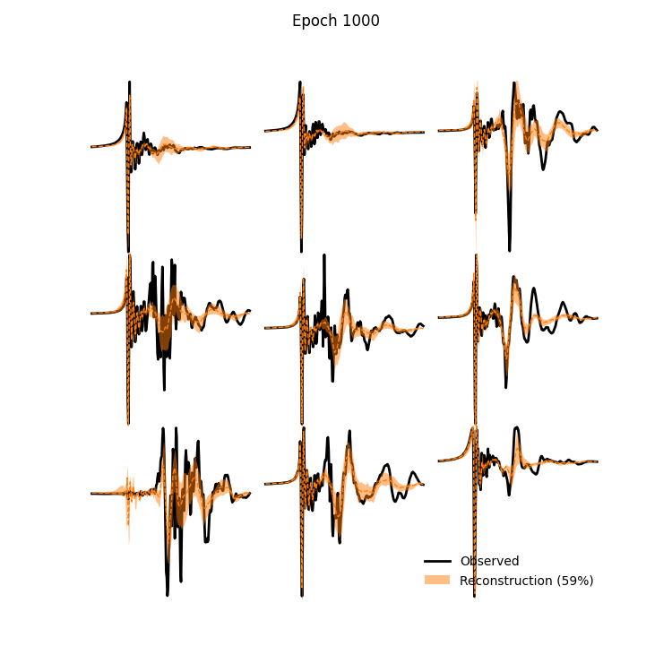
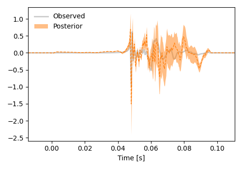

VAE+PE#
Train VAE#
%load_ext autoreload
%autoreload 2
The autoreload extension is already loaded. To reload it, use:
%reload_ext autoreload
import numpy as np
from starccato_jax.data import load_data
import matplotlib.pyplot as plt
import os
HERE = os.getcwd()
model_savedir = f"{HERE}/model_out"
train_data, val_data = load_data()
plt.figure(figsize=(3, 2.5))
for i in range(100):
plt.plot(train_data[i], color='k', lw=0.3, alpha=0.2);
plt.savefig(f"{model_savedir}/training_data.png")

from starccato_jax.trainer import train_vae
LATENT_DIM = 20
train_vae(train_data, val_data, n_epochs=200, batch_size=32, latent_dim=LATENT_DIM, save_dir=model_savedir)
Loss |
Reconstruction |
|---|---|
|
 |

from starccato_jax.trainer import load_model
from starccato_jax.model import generate
import jax
zs = jax.random.uniform(jax.random.PRNGKey(0), (100, LATENT_DIM))
generated_signal = generate(*load_model(model_savedir), z=zs)
for i in range(100):
plt.plot(generated_signal[i], color='tab:orange', alpha=0.3)
/Users/avaj0001/Documents/projects/venvs/starccato_jax/lib/python3.11/site-packages/orbax/checkpoint/_src/serialization/type_handlers.py:1175: UserWarning: Couldn't find sharding info under RestoreArgs. Populating sharding info from sharding file. Please note restoration time will be slightly increased due to reading from file instead of directly from RestoreArgs. Note also that this option is unsafe when restoring on a different topology than the checkpoint was saved with.
warnings.warn(

MCMC on one validation dataset#
from starccato_jax.sampler import sample_latent_vars_given_data
mcmc_out = sample_latent_vars_given_data(val_data[10], model_savedir, rng_int=0, outdir=f"{HERE}/out_mcmc")
/Users/avaj0001/Documents/projects/venvs/starccato_jax/lib/python3.11/site-packages/orbax/checkpoint/_src/serialization/type_handlers.py:1175: UserWarning: Couldn't find sharding info under RestoreArgs. Populating sharding info from sharding file. Please note restoration time will be slightly increased due to reading from file instead of directly from RestoreArgs. Note also that this option is unsafe when restoring on a different topology than the checkpoint was saved with.
warnings.warn(
/Users/avaj0001/Documents/projects/starccato_jax/src/starccato_jax/sampler.py:41: UserWarning: There are not enough devices to run parallel chains: expected 2 but got 1. Chains will be drawn sequentially. If you are running MCMC in CPU, consider using `numpyro.set_host_device_count(2)` at the beginning of your program. You can double-check how many devices are available in your system using `jax.local_device_count()`.
mcmc = MCMC(nuts_kernel, num_warmup=500, num_samples=2000, num_chains=2, progress_bar=True)
sample: 100%|██████████| 2500/2500 [00:07<00:00, 325.15it/s, 15 steps of size 3.81e-01. acc. prob=0.86]
sample: 100%|██████████| 2500/2500 [00:03<00:00, 733.79it/s, 7 steps of size 4.66e-01. acc. prob=0.84]
mean sd hdi_3% hdi_97% mcse_mean mcse_sd ess_bulk ess_tail \
z[0] 0.665 0.255 0.167 1.000 0.004 0.003 4032.0 2538.0
z[1] 0.691 0.255 0.191 1.000 0.004 0.003 3499.0 2218.0
z[2] 0.371 0.257 0.001 0.836 0.004 0.003 3778.0 2524.0
z[3] 0.937 0.064 0.821 1.000 0.001 0.001 4269.0 1812.0
z[4] 0.930 0.063 0.813 1.000 0.001 0.001 3241.0 1865.0
z[5] 0.245 0.215 0.000 0.671 0.003 0.003 3919.0 1991.0
z[6] 0.232 0.208 0.000 0.634 0.004 0.004 3176.0 1761.0
z[7] 0.513 0.285 0.061 0.994 0.004 0.003 4266.0 1838.0
z[8] 0.397 0.282 0.001 0.905 0.005 0.004 4029.0 2473.0
z[9] 0.333 0.259 0.000 0.823 0.004 0.004 3750.0 2122.0
z[10] 0.246 0.208 0.000 0.653 0.003 0.003 3696.0 2307.0
z[11] 0.188 0.173 0.000 0.517 0.003 0.002 4603.0 2601.0
z[12] 0.950 0.049 0.860 1.000 0.001 0.000 4221.0 2303.0
z[13] 0.191 0.177 0.000 0.539 0.003 0.003 3562.0 2323.0
z[14] 0.012 0.012 0.000 0.036 0.000 0.000 2634.0 1522.0
z[15] 0.268 0.228 0.000 0.708 0.003 0.003 4904.0 2494.0
z[16] 0.833 0.168 0.513 1.000 0.003 0.002 3659.0 1990.0
z[17] 0.915 0.084 0.763 1.000 0.001 0.001 3760.0 2229.0
z[18] 0.134 0.139 0.000 0.388 0.002 0.002 3613.0 1856.0
z[19] 0.050 0.050 0.000 0.138 0.001 0.001 4933.0 2166.0
r_hat
z[0] 1.0
z[1] 1.0
z[2] 1.0
z[3] 1.0
z[4] 1.0
z[5] 1.0
z[6] 1.0
z[7] 1.0
z[8] 1.0
z[9] 1.0
z[10] 1.0
z[11] 1.0
z[12] 1.0
z[13] 1.0
z[14] 1.0
z[15] 1.0
z[16] 1.0
z[17] 1.0
z[18] 1.0
z[19] 1.0

It’s always a good idea to check the convergence of your MCMC sampler, and we’ll use ArviZ to do that here, looking at the Gelman–Rubin (r_hat) statistic, and the effective sample sizes (e.g. ess_bulk):
import arviz as az
inf_data = az.from_numpyro(mcmc_out)
az.summary(inf_data, var_names=['z'])
| mean | sd | hdi_3% | hdi_97% | mcse_mean | mcse_sd | ess_bulk | ess_tail | r_hat | |
|---|---|---|---|---|---|---|---|---|---|
| z[0] | 0.132 | 0.130 | 0.000 | 0.380 | 0.003 | 0.002 | 2076.0 | 2045.0 | 1.0 |
| z[1] | 0.157 | 0.125 | 0.001 | 0.385 | 0.002 | 0.002 | 2669.0 | 2001.0 | 1.0 |
| z[2] | 0.285 | 0.194 | 0.000 | 0.630 | 0.004 | 0.003 | 1891.0 | 1864.0 | 1.0 |
| z[3] | 0.305 | 0.213 | 0.000 | 0.693 | 0.005 | 0.003 | 1987.0 | 1930.0 | 1.0 |
| z[4] | 0.081 | 0.102 | 0.000 | 0.271 | 0.002 | 0.002 | 2088.0 | 2271.0 | 1.0 |
| z[5] | 0.229 | 0.166 | 0.000 | 0.519 | 0.003 | 0.002 | 2247.0 | 2025.0 | 1.0 |
| z[6] | 0.173 | 0.156 | 0.000 | 0.467 | 0.003 | 0.002 | 2330.0 | 1973.0 | 1.0 |
| z[7] | 0.219 | 0.137 | 0.001 | 0.454 | 0.002 | 0.002 | 2785.0 | 1603.0 | 1.0 |
| z[8] | 0.227 | 0.153 | 0.000 | 0.497 | 0.003 | 0.002 | 2085.0 | 2026.0 | 1.0 |
| z[9] | 0.091 | 0.082 | 0.000 | 0.242 | 0.001 | 0.001 | 3014.0 | 2035.0 | 1.0 |
| z[10] | 0.433 | 0.254 | 0.000 | 0.874 | 0.005 | 0.004 | 2478.0 | 1577.0 | 1.0 |
| z[11] | 0.833 | 0.145 | 0.557 | 1.000 | 0.003 | 0.002 | 2049.0 | 1883.0 | 1.0 |
Trace |
|
Corner |
|
CI |
 |


Exploring better number of Z#
from starccato_jax.trainer import train_vae
for z_size in [4, 8, 12, 16, 20]:
train_vae(train_data, val_data, latent_dim=z_size, n_epochs=200,
save_dir=f"{HERE}/model_exploration/model_z{z_size}"
)
z_sizes = [4, 8, 12, 16, 20]
train_losses, val_losses = [], []
for z_size in z_sizes:
# read the losses
loss_fpath = f"{HERE}/model_exploration/model_z{z_size}/losses.txt"
data = np.loadtxt(loss_fpath)
train_losses.append(data[-1, 0])
val_losses.append(data[-1, 1])
## PLOT
plt.figure(figsize=(8, 4))
plt.plot(z_sizes, train_losses, label="Train Loss")
plt.plot(z_sizes, val_losses, label="Val Loss")
plt.xlabel('Latent Dimension')
plt.ylabel('Loss')
plt.title("Loss at 200 epochs")
plt.legend()
<matplotlib.legend.Legend at 0x1327c2c90>